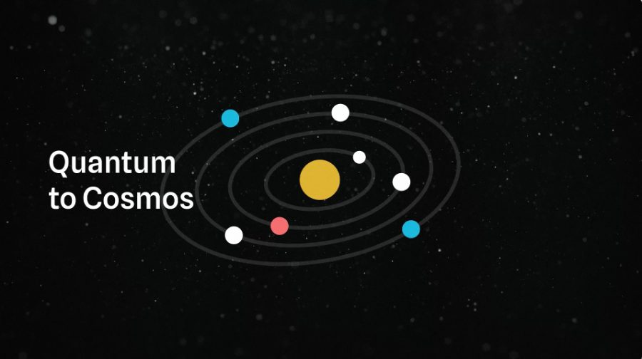
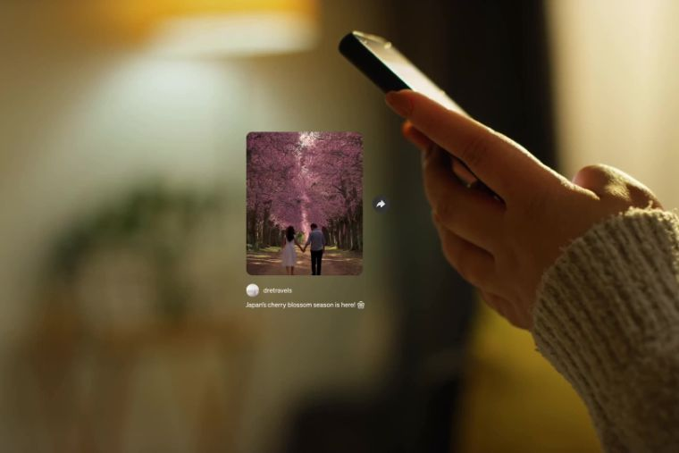
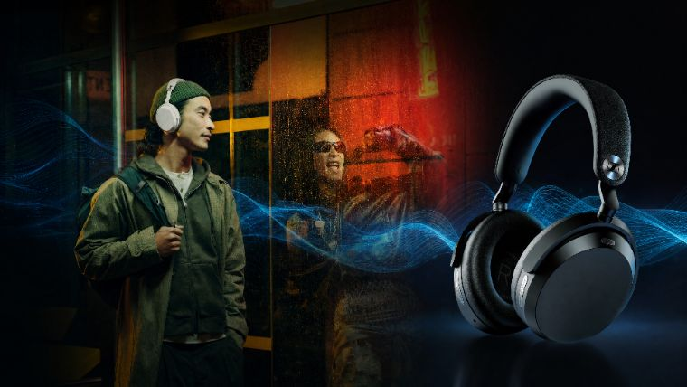
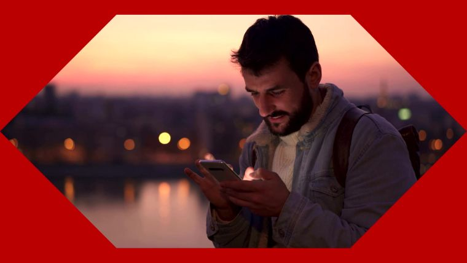
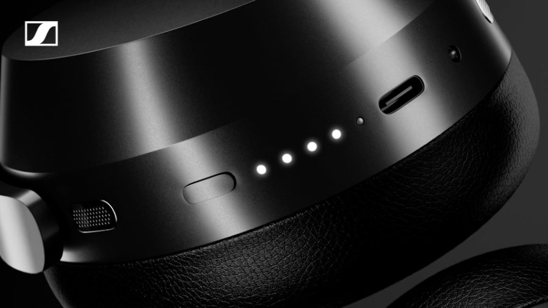

Research, told with a human point of view.
An interview-first format designed to give specialist thinking a clear voice, a visual world and a reason to hold attention.
Earth AI × MONO
A tailored selection of interview, deep-tech and motion-led work — put together for Earth AI.
Explore selected work ↓A specific point of view
Earth AI is making a rigorous, physical exploration loop visible: data, hypothesis, drilling, result, learning. We think the strongest public-facing work does the same thing — it respects the detail, finds the human signal, and gives the idea a form people can enter.
01 — Interview storytelling
Complex work becomes memorable when the people doing it are allowed to be specific, direct and genuinely interesting.
An interview-first format designed to give specialist thinking a clear voice, a visual world and a reason to hold attention.
02 — Deep tech
MONO has already worked alongside Main Sequence and its companies. These pieces are included because their storytelling challenge is close to Earth AI’s: serious technical work, ambitious people, and a need to bring everyone into the picture.

Flagship film and editorial story for a deep-tech investment platform.
Technical ambition translated into a clear visual narrative.
Motion graphics that help a larger system become legible at a glance.
Also relevant: Morse Micro and the broader Main Sequence staff/founder interview work.
03 — AI-assisted visualisation
AI visualisation is most useful when it serves a larger argument — clarifying a proposition early, supporting a pitch, or giving motion design a more distinctive world to work with.

PITCH VISUALISATION + MOTIONA Qantas pitch treatment where AI visualisation and motion graphics were used to help a creative direction become tangible before production.
04 — Brand production
Deep tech deserves a production partner who also understands the realities of advertising, launches, brand systems and delivering work across a large number of formats.

Campaign and product content designed to travel across channels.

Work made to hold a brand thought together across the full system.

Film, motion, versions and delivery under one accountable production layer.
How we would work with Earth AI
Your internal storyteller and subject-matter experts set the narrative and scientific standard.
Interviews, films, edit, motion, design, AI visualisation, rollout assets and the production discipline around them.
A discovery, field milestone, hiring narrative or partnership moment — build the proof before expanding the relationship.
Earth AI × MONO
We’d love to talk through the work, share the relevant pieces in full, and find the first story worth making together.
Talk to MONO ↗